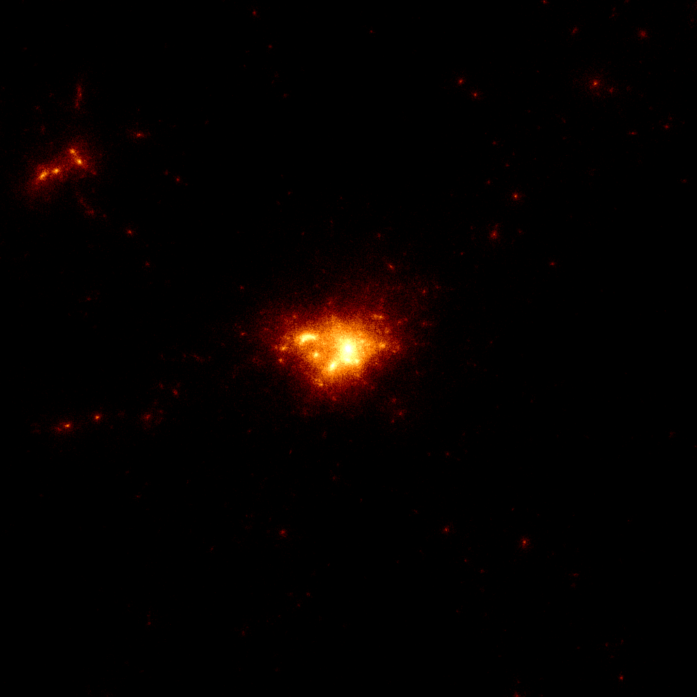

The Mass mAp Generator for the Multidark Suite (MAGNMS) is designed to take a PMss file from the MultiDark suite of simulations, and convert it to a FITS surface density map compatible with Ben Metcalf's GLAMER code.
The code uses CMake to compile the code. A CMakeLists.txt is included in the repository, but will require modification for each user's system.
This program takes an input file (extractInfo.dat or file given as command line argument) for input parameters to write FITS mass maps from simulations. Each argument must be listed, and the value seperated by whitespace. Accepted variables can be found in the readme.
The general procedure of the code is outlined below:
MAGNMS can be downloaded at my Github page, where you'll find more documentation and details, as well as tools I use for analyzing the mass maps.
2D surface density map from MAGNMS, 10 h-1 Mpc FOV